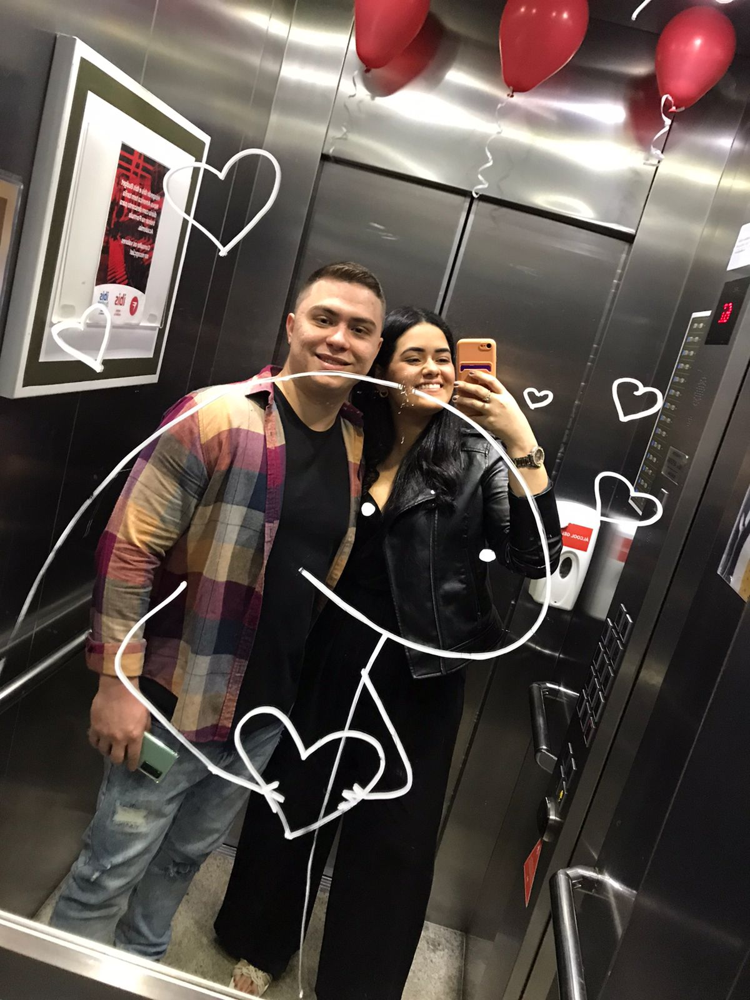

Feliz dia dos Namorados
Sei que não sou muito bom com palavras, em me expressar, mas quero te dizer o quanto me sinto feliz e privilegiado por ter alguém como você do meu lado nessa data tão especial. Muitas vezes eu ja me peguei pensando na forma como nos conhecemos, e a última coisa que passou pela minha cabeça naquele ano novo, foi que eu conheceria minha futura namorada, como foi inesperado, e como eu tive sorte de encontrar alguém tão especial, e sorte também pela sua loucura de viajar em cima da hora sem planejar nada, obrigado amor kk. Esse é o nosso primeiro dia dos namorados, e quero te agradecer por cada minuto ao seu lado, como tem sido incrível compartilhar minha vida com você. Obrigado por me fazer tão bem amor, por me proporcionar tantos momentos maravilhosos ao seu lado, por toda essa história linda que estamos contruindo. A cada dia que passa eu me apaixono ainda mais por você, sinto ainda mais que você é a mulher da minha vida, e que esse possa ser o primeiro de muitos dias dos namorados que passaremos juntos. Eu te amo Thamires(não fica brava comigo amor, por favor), você me encanta com seu sorriso, me contagia com seu beijo, me conforta com seu abraço, e me deixa em paz com seu carinho, eu amo cada gesto e cada detalhe seu, até seu estresse por incrível que pareça kk. Saiba que sempre vou estar aqui dando o meu máximo pra te fazer feliz, e pra te ver sorrindo, pq não tem nada mais prazeroso pra mim do que te ver bem vida. Obrigado mais uma vez por ser uma namorada tão incrível, eu te admiro muito amor e sou apaixonado por você. Te amo muito minha vida!
